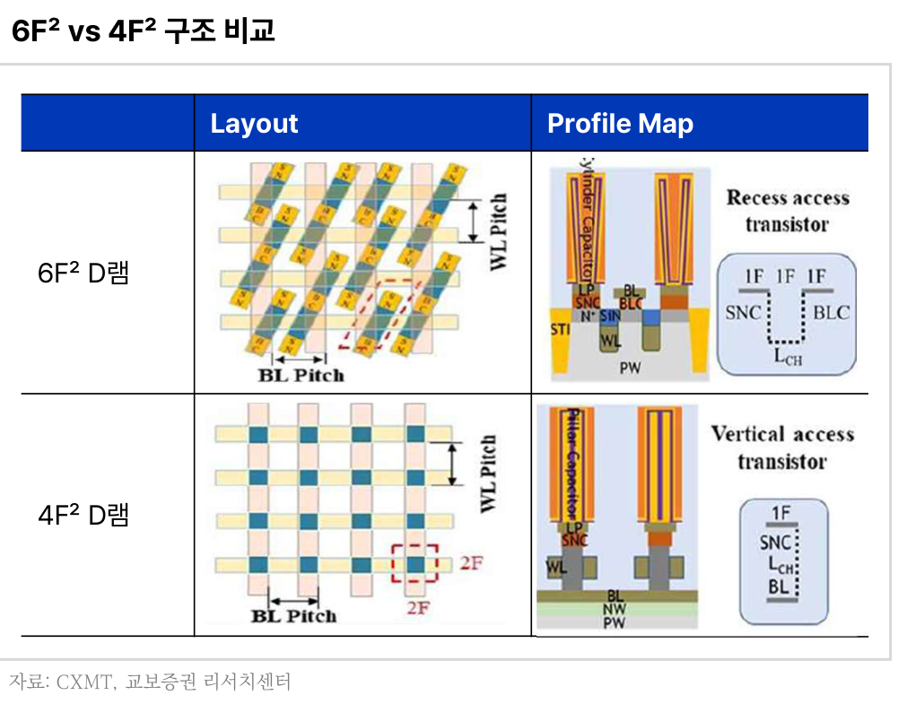
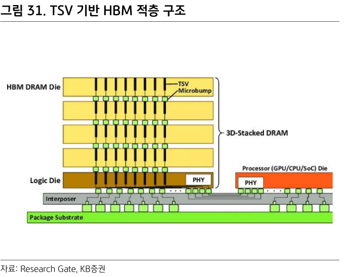
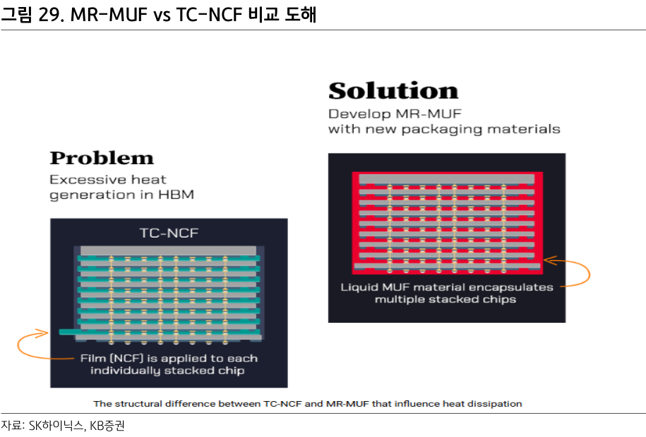
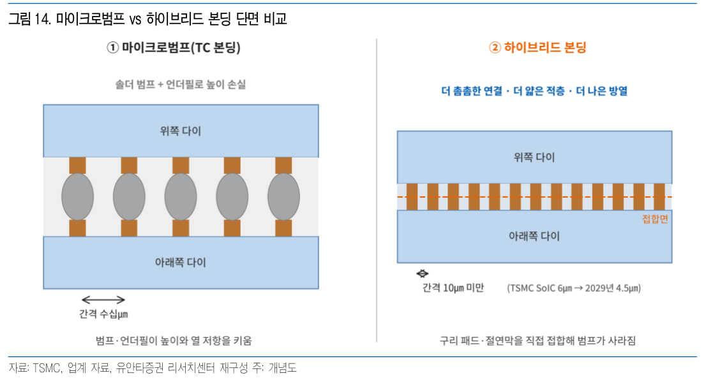
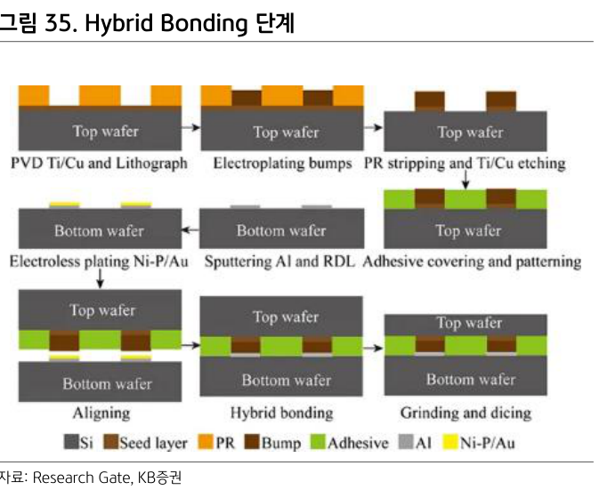
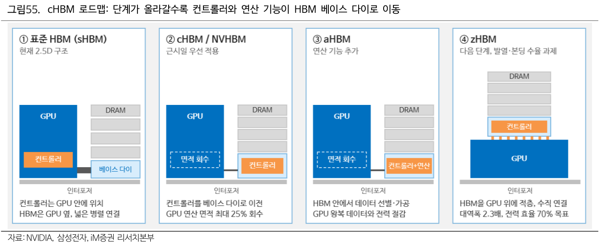
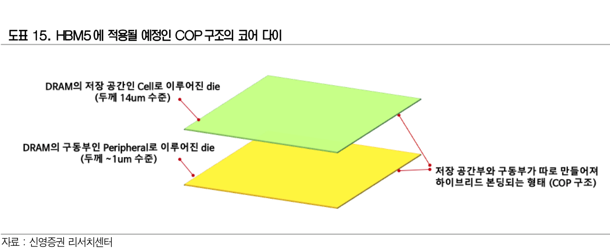

메모리 DRAM·HBM — HBM이 웨이퍼를 삼키며 범용 DRAM 부족을 늘리는 사이클
한눈에 보기
결론 3줄
- 지금 사이클 길이는 수요(AI 서버)보다 공급(HBM 웨이퍼 잠식·클린룸 공백)이 정함
- HBM이 웨이퍼는 많이 쓰고 비트는 적게 냄 → 범용 DRAM 부족이 2027년까지 커짐
- 쟁점은 “언제 꺾이나”가 아닌 “2H27~2028 범용 조정 깊이와 LTA·HBM의 완충력”
| 항목 | 값 | 출처 |
|---|---|---|
| HBM 웨이퍼 비중(2026E→2028E) | 25%→35%→42% | iM증권, 2026-11-04 |
| HBM 비트 비중(2026E→2028E) | 11%→13%→16% | iM증권, 2026-11-04 |
| 2027 DRAM 수급(2026보다 부족↑) | 실질 공급 +14.7% vs 비트 수요 20%대 중반 | DS투자증권, 2026-11-10 |
| 3사 HBM 매출(2026E→2028E) | 634억→2,094억→3,830억달러 | iM증권, 2026-11-04 |
| 3사 HBM 평균단가(2026E→2028E) | 1.69→3.54→4.25달러/Gb | iM증권, 2026-11-04 |
| LTA 해지 검토선 | DRAM 가격 4Q27 고점 대비 약 −60% | iM증권, 2026-11-04 |
| 다운사이클 Base(Blended DRAM ASP) | 2028년 −25%, 2029년 −15% | DS투자증권, 2026-11-10 |
flowchart LR A["빅테크 AI CapEx<br/>2027E 약 1조달러"] --> B["AI 서버 출하·<br/>대당 메모리↑"] B --> C["HBM 수요<br/>(GPU·ASIC)"] C --> D["HBM이 DRAM 웨이퍼 잠식<br/>웨이퍼 35% vs 비트 13%(2027E)"] D --> E["범용 DRAM 비트 부족"] F["신규 팹 공백<br/>비트 기여 2028년~"] --> E E --> G["계약가 급등<br/>LTA·선수금 확산"] G --> H["2H27~2028<br/>범용 조정 깊이?"] C --> I["HBM ASP·커스텀화<br/>→ 완충"] I --> H
- 관련 노트: 03_메모리_NAND · 04_메모리_증설로드맵 · 10_반도체후공정 · 05_반도체파운드리 · 07_반도체장비 · 01_반도체_용어집 · 11_반도체_하우스시각_변경이력 · 12_반도체_트래킹캘린더
① 기술 기초
요약
- DRAM 미세화 효율이 떨어짐 → 같은 투자로 비트가 덜 늘어남
- HBM4부터 버스 폭 2배 → 베이스다이가 로직 공정(파운드리)으로 넘어감
- 하이브리드 본딩은 JEDEC 높이 완화로 HBM4E~HBM5 전후로 늦춰짐
DRAM 셀과 공정 노드
- DRAM 셀 = 트랜지스터 1개 + 커패시터 1개 → 전하 누설로 주기적 리프레시 필요
- 온도↑ → 리프레시 잦아짐 → 유효 대역폭↓ (신영증권, 2026-05-26)
- 6F² → 4F²: 현 양산은 6F²(F=최소 선폭). 4F²는 수직 채널 트랜지스터 구조
- 이론상 셀 면적 약 33% 축소, 셀 어레이 집적도 약 50% 향상 (교보증권, 2026-11-02)
| 업체 | 4F²·차세대 노선 | 시점 | 출처 |
|---|---|---|---|
| CXMT | 4F² 기반 서버용 DDR5 RDIMM 공개 | 2026년 말 목표 | 교보증권, 2026-11-02 |
| 마이크론 | 4F²를 “신화”라 부름 → 6F² 미세화 + 3D DRAM 병행 | — | 교보증권, 2026-11-02 |
| 삼성전자 | 4F²(10a), 셀·주변회로를 웨이퍼 단위 하이브리드 본딩 | 2028년 양산 목표 | 유안타증권, 2026-11-06 |

출처: 교보증권, 2026-11-02, p.28
- 10나노급 세대 이름
| 세대명 | 순번 | 대표 사례 | 비고 |
|---|---|---|---|
| 1a(1α) | 10나노급 4세대 | CXMT 미진입(1a 진입 지연) (유진투자증권, 2026-07-28) | — |
| 1b(1β) | 5세대 | 현 범용 서버 DRAM 주력, CXMT G5는 1b 수준 다중패터닝 (교보증권, 2026-11-02) | — |
| 1c(1γ) | 6세대 | 삼성·SK HBM4E 코어다이, 마이크론은 1γ로 EUV 도입 (iM증권, 2026-06-18) | 1b→1c 디자인룰 축소폭 10% 미만 (대신증권, 2026-09-02) |
| 1d | 7세대 | 삼성전자 1d 공정 2027년 (키움증권, 2026-08-11) | 장비 수요의 다음 축 |
- 미세화 효율 저하 — 웨이퍼 캐파 10% 증가 시 비트 증가 (삼성증권, 2026-06-02)
| 시기 | 비트 증가 |
|---|---|
| 과거 | 30~40% |
| 현재 | 20% 이하 |
| HBM 전환 후 | 그보다 더 낮음 |
HBM 구조 — TSV·적층·베이스다이
- HBM(High Bandwidth Memory, 고대역폭 메모리) = DRAM 코어다이를 TSV(Through Silicon Via, 실리콘 관통 전극)로 수직 연결한 스택
- 맨 아래 베이스다이(로직 다이) 가 GPU와 신호를 주고받는 PHY·I/O 담당
- 스택을 인터포저 위 GPU 옆에 얹음(2.5D, TSMC CoWoS) → 패키징이 별도 병목

출처: KB증권, 2026-07-07, p.31
flowchart LR W["DRAM 웨이퍼<br/>(코어다이, 1b/1c)"] --> T["TSV 형성·박막화<br/>범프"] B["베이스다이<br/>HBM4부터 로직 공정<br/>(TSMC·삼성 파운드리)"] --> S T --> S["적층·본딩<br/>(MR-MUF / TC-NCF / 하이브리드)"] S --> K["스택 테스트"] K --> C["CoWoS: GPU+HBM<br/>인터포저 실장"] C --> G["AI 가속기"]
HBM 세대별 스펙
| 세대 | 데이터버스 폭 | 핀당 속도 | 스택당 대역폭 | 시점 |
|---|---|---|---|---|
| HBM3E | 1,024bit | 9.2~9.6Gbps (KB증권 07-07, 유안타 11-06) | 1.2~1.5TB/s (KB증권, 2026-07-07) | 2023~2024 |
| HBM4 | 2,048bit | 10Gbps 내외(JEDEC 잠정, 유안타 11-06) / 12Gbps 이상(KB 07-07) / 삼성 13.0Gbps (ISSCC, 신영 05-26) | 2TB/s 이상(KB) / 삼성 3.3TB/s (신영 05-26) | 2H25~2026 |
| HBM4E | 2,048bit | 12Gbps 이상(유안타) / 최대 16Gbps(삼성 샘플, iM 06-18) | 스택당 4TB/s(삼성 샘플, iM 06-18) | 2027 |
| HBM5 | 2,048bit 이상(Custom) | 32Gbps 목표, HBM5E 42Gbps (신영 05-26) | ⚠ 원문 없음 | 2028 Feynman 전후 (유안타 11-06) |
| 세대 | 적층 | 스택 용량 | 베이스다이 | 본딩 |
|---|---|---|---|---|
| HBM3E | 최대 12단 | 최대 24GB (KB증권, 2026-07-07) ⚠ 12단 용량 원문 간 확인 필요 | DRAM 공정 | MR-MUF(SK)·TC-NCF(삼성) |
| HBM4 | 12~16단 | 36GB(12단), 16단은 2H26 양산 계획 (iM 06-18) | 로직 공정: SK→TSMC, 삼성→자사 4nm, 마이크론 자체 (유안타 11-06) | 16단도 MR-MUF 유지(SK) |
| HBM4E | 12단 주력, 16단은 CY27 말 이후 | 48GB(32Gb×12), 64GB(32Gb×16) (iM 06-18) | 삼성 4nm, SK TSMC 3nm 검토, 마이크론 TSMC 외주 (iM 06-18) | 삼성 16단부터 하이브리드 전망, SK는 20단 이후 (iM 06-18) |
| HBM5 | 20단 이상 논의 | ⚠ 원문 없음 | 로직 + 컨트롤러 이전(NVHBM) | COP+하이브리드 본딩 (신영 05-26) |
- 세대 교체 축이 “핀 속도”에서 “버스 폭·베이스다이”로 이동
- HBM2~HBM3E: 1,024bit 고정, 핀 속도만 2.4→9.6Gbps (유안타증권, 2026-11-06)
- HBM4: 2,048bit → 같은 쇼어라인에 I/O 2배 → DRAM 공정 한계 → 로직 공정 (유안타증권, 2026-11-06)
- 단순 환산: HBM3E 1,024bit×9.6Gbps÷8 ≈ 1.2TB/s, HBM4 2,048bit×10Gbps÷8 ≈ 2.6TB/s (내 계산)
적층·본딩 방식 — TC-NCF · MR-MUF · 하이브리드
| 방식 | 원리 | 쓰는 곳 | 장점 | 한계 |
|---|---|---|---|---|
| TC-NCF | 칩마다 비전도성 필름(NCF)을 붙이고 열압착 | 삼성전자(HBM3E까지) | 칩별 공정 제어 쉬움 | 필름 층이 열을 가둠 (KB증권, 2026-09-07) |
| MR-MUF | 칩을 쌓은 뒤 액상 몰드(MUF)로 한꺼번에 채움 | SK하이닉스, 16단 HBM4까지 유지 | 방열·수율 검증됨 | 16단에서 두께가 물리적 한계에 근접 (iM증권, 2026-06-18) |
| 하이브리드 본딩(HCB) | 범프 없이 구리-구리 직접 접합 | 삼성 HBM4E 16단부터 전망, HBM은 HBM4E~HBM5 전후 | 초미세 피치, TCB 대비 열저항 20%↓ (KB증권, 2026-07-07) | 1μm 파티클 하나가 약 10mm² 불량 유발 → CMP 평탄도 결정적 (신영증권, 2026-05-26) |

출처: KB증권, 2026-09-07, p.40

출처: 유안타증권, 2026-11-06, p.41

출처: KB증권, 2026-07-07, p.31
- 하이브리드 본딩 도입이 늦어진 이유
- JEDEC 2026년 1월 HBM 높이 기준 720μm→775μm 완화 → 16단 HBM4도 마이크로범프 가능 (유안타증권, 2026-11-06)
- 775μm에 16단을 넣으려면 웨이퍼를 약 30μm까지 연삭 (iM증권, 2026-06-18)
- HBM4 패드 간격에선 하이브리드 비용효율 낮음 → HBM4E~HBM5 전후 도입 준비 (유안타증권, 2026-11-06)
신규 폼팩터 — LPDDR·SOCAMM·MRDIMM·CXL·PIM
- 서버 메모리가 RDIMM 한 규격에서 여러 갈래로 분화 (유안타증권, 2026-11-06)
| 규격 | 최대 속도 | 구조 | 장점 | 한계 | 주요 용도 |
|---|---|---|---|---|---|
| DDR5 RDIMM | 9.2Gbps | RCD + DDR5 | 최대 512GB, Chipkill RAS | 고속화 시 채널당 DIMM 수 감소 | 범용·엔터프라이즈 서버 |
| DDR5 MRDIMM | 12.8Gbps(Gen2)·16.0Gbps(Gen3) | 버퍼칩(MRCD·MDB)으로 2랭크 동시 전송 | 대역폭 약 2배, RAS 유지 | 버퍼칩 비용 | HPC·고대역폭 서버 |
| LPDDR5X SOCAMM2 | 10.7Gbps | x32 LPDDR5X 4개 | RDIMM 대비 면적·전력 약 1/3 | Chipkill 미지원 | AI 추론 서버 |
출처: 유안타증권, 2026-11-06 (Synopsys, JEDEC Industry Forum 2026.10 인용)
- LPDDR6가 서버 진입을 넓힘 (유안타증권, 2026-11-06)
| 항목 | 기존(LPDDR5X) | LPDDR6 |
|---|---|---|
| 채널 폭 | 16bit | 24bit |
| 채널당 대역폭 | 21.3GB/s | 43.2GB/s |
| SOCAMM2당 최대 용량 | 256GB | 512GB |
| RAS | — | 메타데이터 기반 RAS 추가 |
| PIM 규격 | — | LPDDR6-PIM 1.0 규격 4Q26 발표 목표 |
| PIM 내부 대역폭 | — | 약 4배 |
- CPU 쪽 시스템 DRAM 확대 = KV 캐시 오프로딩
- 대기 세션의 KV 캐시를 CPU DRAM으로 내림 → NVIDIA Vera의 LPDDR5X 용도 (DS투자증권, 2026-11-10)
- Grace 최대 480GB → Vera 768GB(초기 1.5TB 계획을 공급 제약으로 절반) (DS투자증권, 2026-11-10)
- CXL: 수치 근거 확보 못 함 ⚠ 원문 없음 (KV 캐시 계층 용어로만 거론, 삼성증권 2026-06-02)
② 전방 수요
요약
- 미국 CSP 4사 CapEx 2027E 약 1조달러 — 증가율은 꺾여도 금액은 계속 늘어남
- AI 서버 대수·대당 DRAM이 함께 늘어남 → 서버+HBM이 DRAM 비트의 과반
- GPU의 HBM 사양 축소(De-spec)는 수요 감소보다 공급 부족의 증거라는 시각이 다수
빅테크 CapEx
- 미국 CSP 4사 CapEx (십억달러) — 키움증권, 2026-08-11, p.11 (Bloomberg 컨센서스)
| 회사 | 2024 | 2025 | 2026E | 2027E | 2028E |
|---|---|---|---|---|---|
| Alphabet | 52.5 | 91.4 | 201.5 | 301.6 | 340.8 |
| Meta | 37.3 | 69.7 | 136.0 | 197.3 | 213.7 |
| Microsoft | 55.7 | 88.2 | 145.3 | 222.6 | 257.8 |
| Amazon | 83.0 | 131.8 | 220.2 | 278.3 | 311.1 |
| 4사 합 | 228.5 | 381.1 | 703.0 | 999.8 | 1,123.4 |
| 4사 합(DS 집계) (DS투자증권, 2026-11-10) | 217.3 | 357.5 | 680.9 | 1,044.4 | 1,185.5 |
| 회사 | 2026E YoY | 2027E YoY | 2027E CapEx/OFCF |
|---|---|---|---|
| Alphabet | +120% | +50% | 1.1배 |
| Meta | +95% | +45% | 1.2배 |
| Microsoft | +65% | +53% | 1.0배 |
| Amazon | +67% | +26% | 1.1배 |
xychart-beta title "미국 CSP 4사 CapEx 합계 (십억달러)" x-axis ["2024", "2025", "2026E", "2027E", "2028E"] y-axis "십억달러" 0 --> 1300 line [217.3, 357.5, 680.9, 1044.4, 1185.5] line [228.5, 381.1, 703.0, 999.8, 1123.4]
선1 = DS투자증권 집계 (DS투자증권, 2026-11-10), 선2 = 키움증권(2026-08-11) 4사 합(내 계산). 방향 일치, 2027E는 DS가 4% 높음
- CapEx 보조 지표 — 증가율 둔화·차입 의존
| 지표 | 값 | 출처 |
|---|---|---|
| 4사 CapEx 증가율 가정 | 2027년 53% → 2028년 14% | DS투자증권, 2026-11-10 |
| AI 서버 장비 예산 | 4,700억 → 5,607억달러(+19%) | DS투자증권, 2026-11-10 |
| 주요 9개 CSP 2027년 CapEx | 1.5조달러 이상, +60% | 교보증권, 2026-11-02, TrendForce 인용 |
| 5대 하이퍼스케일러 2026년 누적 회사채 | 약 2,180억달러 = 2025년 연간(1,090억달러)의 두 배 | 교보증권, 2026-11-02 |
| 2027년 자금 부족분 전액 차입 시 | 약 2,000억달러 | iM증권, 2026-11-04 |
| └ 차입 후 순차입금/EBITDA | Oracle 제외 4사 1.2배 이하 | iM증권, 2026-11-04 |
- 증가율 둔화를 수요 감소로 읽으면 안 됨 → 장비 예산 금액은 증가 (DS투자증권, 2026-11-10)
- 외부 조달 의존 → AI 반도체가 경기 민감 섹터 성격을 띠기 시작 (키움증권, 2026-08-11)
AI 서버 출하와 대당 메모리
| 항목 | 2025 | 2026E | 2027E | 2028E | 2029E |
|---|---|---|---|---|---|
| 글로벌 AI 서버(만 대) DS투자증권, 2026-11-10 | 213 | 287 | 386 | 503 | 568 |
| 일반 서버(백만 대) DS투자증권, 2026-11-10 | 14.2 | 16.7 | 19.6 | 21.1 | 22.4 |
| AI 서버 대당 시스템 DRAM(GB) DS투자증권, 2026-11-10 | 1,400 | 2,000 | 2,500 | 3,025 | 3,539 |
| 일반 서버 대당 DRAM(GB) DS투자증권, 2026-11-10 | 808 | 868 | 940 | 1,015 | 1,086 |
| 서버 DRAM 수요(HBM 포함, 억GB) DS투자증권, 2026-11-10 | — | — | — | 473.3(+36%) | 594.6(+26%) |
| AI 서버 출하 YoY 교보증권, 2026-11-02 | — | — | +36% | — | — |
| 전체 서버 출하 YoY iM증권, 2026-11-04 | — | — | +18% | — | — |
xychart-beta title "AI 서버 대당 시스템 DRAM vs 일반 서버 (GB, DS투자증권)" x-axis ["2025", "2026E", "2027E", "2028E", "2029E"] y-axis "GB" 0 --> 4000 line [1400, 2000, 2500, 3025, 3539] line [808, 868, 940, 1015, 1086]
선1 = AI 서버, 선2 = 일반 서버 (DS투자증권, 2026-11-10)
- 2026년 AI 서버 대수: 키움 261만 대(+21%) (키움증권, 2026-06-01) vs DS 287만 대 (DS투자증권, 2026-11-10)
- 기준(CapEx 역산 vs 리서치기관) 상이 → 직접 비교 주의 ⚠
GPU·ASIC 1개당 HBM 탑재량 — 사양 조정(De-spec)
| 가속기 | 원안 | 조정안 | 조정 이유 | 출처 |
|---|---|---|---|---|
| Rubin(2026) | HBM4 12단 36GB×8 | 3Q26~ HBM4 8단 24GB×8(192GB) 병행 | 메모리 공급 제약 | 교보증권, 2026-11-02 ⚠ 원문 표기 “228GB(36GB×8)”, 계산상 288GB |
| Rubin Ultra(2027) | HBM4E 1,024GB(64GB×16큐브) | 384GB(48GB×8) 또는 512GB(32GB×16) | 인터포저 워피지·접합 수율, 16단 적층 수율 | iM증권 2026-06-18, 키움증권 2026-08-11 |
| Rubin Ultra(2027) | — | 8단 HBM4 2Q27 양산 목표, 8단·12단 혼용 검토 | 제한된 웨이퍼로 가속기 수 극대화 | 유안타증권, 2026-11-06 |
| Vera Rubin NVL72 LPDDR5X | 54TB/랙 | 27TB/랙 | LPDDR 공급 부족 | 하나증권, 2026-06-08 (SemiAnalysis 인용) |
| De-spec 해석 | 근거 | 출처 |
|---|---|---|
| 공급 부족의 증거(다수) | 공급 개선 시 Re-spec 가능 | 교보증권, 2026-11-02 |
| 공급 부족의 증거(다수) | Vera Rubin LPDDR를 절반으로 줄여도 GB 대비 50% 증가 | 하나증권, 2026-06-08 |
| 수요 탄력 둔화(소수) | 엔비디아·CSP 신모델의 HBM·시스템 메모리 축소 | BNK투자증권, 2026-09-14 |
- NVIDIA 세대별 HBM 탑재량 H100→R300 우상향 — 그래프만 제공, 수치 ⚠ 원문 없음 (키움증권, 2026-08-11)
범용 DRAM 수요 — 서버·PC·모바일
- 응용처별 DRAM 비트 비중(2026) — 같은 해인데 하우스마다 분류가 다름
| 출처 | 서버 | HBM | 모바일 | PC | 기타 |
|---|---|---|---|---|---|
| 삼성증권, 2026-06-02 (Counterpoint) | 48% | 9% | 22% | 10% | 12% |
| DS투자증권, 2026-11-10 | 범용 29% + AI 서버 19% | 9% | 21% | 7% | 15% |
| 키움증권, 2026-08-11 | 44%(HBM 포함 추정 ⚠) | — | 22% | 8% | 26% |
-
서버+HBM 비중 2028년 64% (삼성증권, 2026-06-02)
-
서버 비중 2025년 50% → 2026년 61% (BNK투자증권, 2026-08-18)
-
장기 비트 수요 증가율(연평균, 2030까지) — 삼성증권, 2026-06-02
| 응용처 | 연평균 비트 수요 증가율 |
|---|---|
| HBM | 40% |
| 서버 | 25% |
| PC | 12% |
| 모바일 | 9% |
| 기타 | 5% |
| 합계(HBM 포함) | 22% |
| 합계(HBM 제외) | 19% |
-
22% = “공급 과잉 판정 기준선” → 공급 비트 증가율이 22%를 안정적으로 넘는 ‘28~29년이 진짜 변곡점 (삼성증권, 2026-06-02)
-
소비자 기기는 메모리 원가에 눌림
| 지표 | 평소 | 최근 | 출처 |
|---|---|---|---|
| 스마트폰 메모리 원가율 | 10년 평균 11% | 3Q26 46% (DRAM만 26%) | 키움증권, 2026-08-11 |
| 노트PC DRAM 원가율 | 20년 평균 3.7% | 2Q26 25% | 키움증권, 2026-08-11 |
| 2026년 출하 전망 | — | 스마트폰 −16% YoY, PC −13% YoY로 하향 | 키움증권, 2026-06-01 |
-
중저가 OEM 메모리 용량 축소, 고가 OEM 판가 인상 (BNK투자증권, 2026-09-14)
-
2027년 응용처별 생산 증가율 (교보증권, 2026-11-02, TrendForce)
| 응용처 | 2027E 생산 YoY | 2027E 비중 | 증가분 기여 |
|---|---|---|---|
| Server | +25.1% | 42.0% | 43.0% |
| Mobile | +26.1% | 35.5% | 37.4% |
| Graphics | +46.0% | 13.7% | 22.0% |
| PC | −8.5% | 5.2% | −2.5% |
| Consumer | +0.5% | 3.7% | 0.1% |
③ 기술 심화
요약
- HBM 웨이퍼당 비트 = 서버 범용의 약 1/4~1/3 → 웨이퍼 비중이 비트 비중의 2.3~2.7배(내 계산)
- 베이스다이 외주는 웨이퍼 부담을 7~8%만 덜고, 공급을 파운드리 캐파에도 묶음
- 커스텀 HBM → 유통재고가 안 생김 → 사이클 진폭 축소, 단 부가가치 일부 파운드리로 이동
HBM이 범용 DRAM 웨이퍼를 잠식하는 구조
- 웨이퍼 한 장의 값어치(2026-06 시점 가정) — 삼성증권, 2026-06-02, p.19
| 제품 | 넷다이(개) × 다이당 용량 | 수율 | 웨이퍼당 생산(Gb) | 가격($/Gb) | 웨이퍼 매출($) |
|---|---|---|---|---|---|
| HBM3E | 578 × 24Gb | 60% | 8,323 | 1.7 | 14,149 |
| HBM4 | 503 × 24Gb | 50% | 6,034 | 2.3 | 13,879 |
| D1b 서버 | 1,750 × 16Gb | 95% | 26,600 | 1.7 | 45,220 |
| D1c 서버 | 2,100 × 16Gb | 80% | 26,880 | 1.7 | 45,696 |
-
2026년 중반엔 서버 DRAM 웨이퍼 매출이 HBM의 3배 초과 → HBM 가격을 크게 올리지 않으면 증산 유인 약함 → 이후 HBM4 가격 급등(⑤) 배경
-
잠식 규모 추정 — 하우스별
| 지표 | 2025 | 2026E | 2027E | 2028E | 출처 |
|---|---|---|---|---|---|
| HBM 웨이퍼 비중 | 18% | 25% | 35% | 42% | iM증권, 2026-11-04 |
| HBM 비트 비중 | 8% | 11% | 13% | 16% | iM증권, 2026-11-04 |
| 범용:HBM 교환비 | 2.39배 | 2.81배 | 3.48배 | 3.80배 | iM증권, 2026-11-04 |
| 사라진 범용 비트(억Gb) | 326 | 681 | 1,466 | 2,523 | iM증권, 2026-11-04 |
| HBM 웨이퍼 비중 | 19% | — | 31% | — | DS투자증권, 2026-11-10 |
| HBM 비트 비중 | 8% | — | 13% | — | DS투자증권, 2026-11-10 |
| 업계 HBM 웨이퍼 비중 | 약 20%(현재) | — | 30% 가까이 | — | 유안타증권, 2026-11-06 (삼성전자 인용) |
| 신규 웨이퍼 증설 중 HBM 몫 | — | 약 70% | 80% | — | 삼성증권, 2026-06-02 |
xychart-beta title "HBM: 웨이퍼 비중 vs 비트 비중 (%)" x-axis ["2023", "2024", "2025", "2026E", "2027E", "2028E"] y-axis "%" 0 --> 50 line [4, 13, 18, 25, 35, 42] line [2, 6, 8, 11, 13, 16]
선1 = 웨이퍼 투입 비중, 선2 = 비트 공급 비중 (iM증권, 2026-11-04)
- 베이스다이 외주는 웨이퍼 부담을 별로 못 덜어줌 (유안타증권, 2026-11-06)
- 12단 = 코어다이 12장 + 베이스다이 1장 → 외주 몫은 13장 중 1장, 약 7~8% (유안타증권, 2026-11-06)
- 웨이퍼를 먹는 것 = TSV·보호영역으로 커진 코어다이 + 적층 수율 손실 (유안타증권, 2026-11-06)
- 오히려 HBM 공급을 DRAM 웨이퍼 + 파운드리 캐파 두 제약에 묶음 (유안타증권, 2026-11-06)
HBM4 베이스다이의 파운드리 전환과 커스텀 HBM
- 왜 로직 공정인가
- 베이스다이 DRAM 공정→4nm 전환 시 HBM 스택 전력 40%↓, 절감분 전부 베이스다이 (iM증권, 2026-11-04, 삼성전자 Hot Chips 2026 인용)
- H100→Rubin 대역폭 6.6배, GPU 전력 예산 3.3배 → 비트당 에너지 약 50% 감축 필요 (iM증권, 2026-11-04)
| 업체 | HBM4 베이스다이 | HBM4E 베이스다이 | 코어다이 |
|---|---|---|---|
| SK하이닉스 | TSMC | TSMC 3nm 검토 | 1c |
| 삼성전자 | 자사 파운드리(4nm) | 자사 4nm | 1c |
| 마이크론 | 자체 공정 | TSMC 외주 | 1γ |
출처: 유안타증권 2026-11-06, iM증권 2026-06-18
- 커스텀 HBM 로드맵 — 단계가 올라갈수록 컨트롤러·연산이 HBM으로 내려옴

출처: iM증권, 2026-11-04, p.46
| NVHBM | 내용 | 출처 |
|---|---|---|
| 성능 | HBM4E 대비 대역폭 +30%, 전력 −15% | DS투자증권 2026-11-10, 유안타증권 2026-11-06 |
| 면적 | XPU 연산면적 최대 25% 확보 | DS투자증권 2026-11-10, 유안타증권 2026-11-06 |
| 확산 | AWS Trainium4 등 커스텀 ASIC으로 적용 확대 예정 | DS투자증권, 2026-11-10 |
| 한계 | 컨트롤러 IP·표준화는 NVIDIA 보유 | DS투자증권, 2026-11-10 |
| └ 결과 | 메모리사 마진 = 베이스다이 원가·가격 프리미엄 | DS투자증권, 2026-11-10 |
NVHBM = GPU 메모리 컨트롤러를 베이스다이로 이전
- 커스텀화가 사업모델을 바꿈
- 베이스다이에 쌓은 뒤엔 그 고객 외 판매처 없음 → 현물·유통재고 없음 → 사이클 진폭 축소 (iM증권, 2026-11-04)
- 반대 측면: 부가가치 일부가 파운드리·ASIC 디자인하우스로 이동 (유안타증권, 2026-11-06)
- 중국엔 7nm 이하·로직 IP 접근 제한 → HBM4는 “공정과 생태계의 복합 장벽” (유안타증권, 2026-11-06)
- JEDEC 역할: 완성 규격 정의 → 컨트롤러·RAS·BIST·인터페이스 모듈 단위 표준화 (유안타증권, 2026-11-06)
HBM5 — COP 구조·침니·BL16
flowchart LR A["베이스다이 발열"] --> B["DRAM 셀 전하 누설"] B --> C["리프레시 증가·쓰로틀링"] C --> D["열을 수직으로 빼는<br/>'침니(굴뚝)' 필요"] D --> E["코어다이 면적 축소 필요<br/>→ 1c 이하 미세화 막힘"] E --> F["COP(Cell on Periphery)<br/>셀·주변회로 다이 분리 + 하이브리드 본딩"]
출처: 신영증권, 2026-05-26
- COP 극박막화: 셀 다이 약 14μm, 주변회로 다이 1μm 미만 (신영증권, 2026-05-26)
- 버스트 길이 8→16(BL16) → 명령당 데이터 2배 → GPU SRAM 캐시 2배 이상 → SRAM 3D 적층 (신영증권, 2026-05-26)

출처: 신영증권, 2026-05-26, p.19
수율 이슈
| 항목 | 수율 | 출처 |
|---|---|---|
| HBM3E(삼성증권 웨이퍼 모델 가정) | 60% | 삼성증권, 2026-06-02 |
| HBM4(같은 모델 가정) | 50% | 삼성증권, 2026-06-02 |
| SK하이닉스 HBM | 약 70% | 교보증권, 2026-11-02 |
| CXMT HBM3E | 20~30% | 교보증권, 2026-11-02 |
| CXMT HBM3(8단) | 약 25% | 교보증권 2026-11-02, 유안타증권 2026-11-06 |
| 삼성전자 DRAM 1c | 약 80%까지 개선 | 대신증권, 2026-09-08 |
| CXMT DDR5(17nm급 추정) | 90% 이상(보도, 미확인) | 교보증권, 2026-11-02 |
- 삼성 1c 수율 개선 → 1c를 HBM4 전량에서 범용에도 배분 가능 → 원가 절감 본격 기여 (대신증권, 2026-09-08)
- 16단 HBM4E 인증 경쟁 (iM증권, 2026-06-18)
| 구분 | 삼성전자 | SK하이닉스 |
|---|---|---|
| 노선 | 하이브리드 신공정 | 검증된 MR-MUF 연장 |
| 유리한 구간 | 중장기(20단+) 선행 투자 | 단기(16단) 안정성 |
| 샘플 | 5/29 세계 최초 12단 48GB HBM4E 샘플 출하 | 2H26 계획을 6~7월로 당김 |
1c 전환 속도 비교
| 지표 | 2024말 | 2025말 | 2026말 | 2027 | 출처 |
|---|---|---|---|---|---|
| 삼성전자 D1c 캐파(K/월) | 20 | 50 | 200 | — | 삼성증권, 2026-08-17 |
| SK하이닉스 D1c 캐파(K/월) | 20 | 30 | 120 | — | 삼성증권, 2026-08-17 |
| DRAM 내 1c 비중(업계) | — | 1.3% | 14.8% | 33.9% | BNK투자증권, 2026-08-18 |
| 글로벌 1c 출하 비중 | — | 한 자릿수 초반 | 약 20% | — | BNK투자증권, 2026-08-18 |
xychart-beta title "D1c 캐파 (K/월, 연말, 삼성증권)" x-axis ["2024말", "2025말", "2026말"] y-axis "K/월" 0 --> 220 line [20, 50, 200] line [20, 30, 120]
선1 = 삼성전자, 선2 = SK하이닉스 (삼성증권, 2026-08-17)
- 삼성 = P4 전환투자로 범용 D1c / SK = M15X 증설 + D1c 전환 (삼성증권, 2026-08-17)
- 신규 증설은 HBM용 위주, 범용만을 위한 증설은 제한적 (삼성증권, 2026-08-17)
- SK M15X 1c 전환·HBM4 증산 → 4Q26 DRAM 출하 가이던스 QoQ 20% 중반 (DS투자증권, 2026-11-10)
- CXMT G5(1b 수준) = EUV 없이 SAQP → 공정 단계·시간 증가, 비트당 원가 확인 필요 (교보증권, 2026-11-02)
④ 캐파·증설
요약
- 4사 웨이퍼 캐파 2026→2028 약 +30~39%(내 계산) 늘지만, HBM 조정 후 실질 공급 증가율은 2027년 14.7%
- SK하이닉스 2028 캐파는 하우스 간 100K 넘게 갈림(BNK 865K vs DS 760K)
- 신규 팹의 의미 있는 비트 기여는 빨라야 2028년, 집중은 2029년 이후
공장별 분기 일정·장비 반입 시점은 04_메모리_증설로드맵에서 다룸. 여기선 산업 합산과 하우스 간 차이만 정리
3사 + CXMT 웨이퍼 캐파 비교 (K/월, 연말 기준)
| 업체 | 2026 (DS / BNK / iM) | 2027 (DS / BNK / iM) | 2028 (DS / BNK / iM) |
|---|---|---|---|
| 삼성전자 | 740 / 695 / 683 | 875 / 730 / 808 | 1,025 / 840 / 904 |
| SK하이닉스 | 660 / 590 / 580 | 720 / 715 / 639 | 760 / 865 / 741 |
| 마이크론 | 365 / 300 / ⚠ 원문 없음 | 385 / 353 / — | 435 / 468 / — |
| CXMT | 290 / 300 / ⚠ 원문 없음 | 340 / 400 / — | 460 / 440 / — |
| 4사 합 | 2,055 / 1,885 / — | 2,320 / 2,198 / — | 2,680 / 2,613 / — |
DS = 2026F~2028F, BNK·iM = 2026E~2028E 표기
출처: DS투자증권 2026-11-10 p.26~27 / BNK투자증권 2026-09-14 p.11 / iM증권 2026-11-04 p.39(연간 웨이퍼 K장을 12로 나눈 값, 내 계산). DS 4사 합은 내 계산. 요약 증가율(2026→2028: DS +30%, BNK +39%)도 내 계산
xychart-beta title "DRAM 웨이퍼 캐파 전망 (K/월, 연말, DS투자증권)" x-axis ["2026F", "2027F", "2028F", "2029F", "2030F"] y-axis "K/월" 0 --> 1400 line [740, 875, 1025, 1175, 1295] line [660, 720, 760, 840, 960] line [365, 385, 435, 510, 595] line [290, 340, 460, 580, 630]
선 순서: 삼성전자, SK하이닉스, 마이크론, CXMT (DS투자증권, 2026-11-10)
- 다른 하우스 점검값
| 항목 | 값 | 출처 |
|---|---|---|
| SK하이닉스 4Q26 | 620K/월 | 키움증권, 2026-08-11 |
| CXMT 4Q26 → 4Q28E | 300K/월 → 500~600K/월 | 키움증권, 2026-08-11 |
| CXMT 2Q26 | 300K/월 = 마이크론과 동일, 2024년의 2배 | IBK투자증권, 2026-08-20, OMDIA |
| 전 세계 DRAM 웨이퍼 증가 2027년 | +114K/월 | IBK투자증권, 2026-08-20, OMDIA |
| 〃 2028년 | +49K/월 | IBK투자증권, 2026-08-20, OMDIA |
| 〃 2029년 | +353K/월 | IBK투자증권, 2026-08-20, OMDIA |
| 글로벌 DRAM 캐파 | 2025말 대비 2028말 약 +50%, 2030말 약 2배 | BNK투자증권, 2026-09-14 |
-
SK하이닉스 2028년 캐파 BNK 865K vs DS 760K → Y1 램프 속도·Y2 착공 가정 차이 (DS는 Y2 2028년 40K→0K로 수정, 2026-11-10)
-
캐파≠비트: CXMT 웨이퍼당 5,746Gb = 마이크론 20,612Gb의 약 1/4 (IBK투자증권, 2026-08-20, OMDIA 2025)
- DS의 CXMT 상대 bits/wafer 가정: 2027년 0.60, 2030년 0.70, 2035년 0.80 (DS투자증권, 2026-07-20)
-
HBM 조정 후 “실질” 캐파 (HBM 교환비·bits/wafer 반영, K/월 환산) — DS투자증권, 2026-11-10
| 2026F | 2027F | 2028F | 2029F | 2030F | |
|---|---|---|---|---|---|
| 삼성전자 | 627 | 722 | 894 | 1,033 | 1,148 |
| SK하이닉스 | 500 | 585 | 642 | 716 | 826 |
| 마이크론 | 315 | 339 | 392 | 463 | 544 |
| CXMT | 167 | 200 | 297 | 403 | 469 |
| 4사 합 | 1,609 | 1,846 | 2,226 | 2,615 | 2,987 |
| 공급 증가율 | — | 14.7% | 20.6% | 17.4% | 14.2% |
HBM 캐파
| 지표 | 2024 | 2025 | 2026 | 2027E | 출처 |
|---|---|---|---|---|---|
| HBM 캐파(천장/월) | 265 | 410 | 530 | 790 | 키움증권, 2026-08-11 |
| 3사 HBM TSV 캐파(K/월, 연말) | — | — | 470 | 610 | DS투자증권, 2026-11-10 |
| 삼성 HBM 웨이퍼 투입(만장/월, 평균) | — | — | 약 17 | 약 27 | 유안타증권, 2026-11-06 |
| CoWoS 캐파(천장/월) | 40 | 75 | 120 | 150 | 키움증권, 2026-08-11 |
| HBM 비트 출하 YoY | — | — | — | +50~60% | DS투자증권, 2026-11-10 |
| HBM 생산 비트 YoY | — | — | — | +50% | 키움증권, 2026-08-11 |
- 키움 790K vs DS 610K = 측정 기준 차이로 보임(웨이퍼 인풋 vs TSV 캐파) ⚠ 직접 비교 금지
- SK하이닉스는 HBM 수요의 60~70%만 채우도록 증설 조절 가능성 (유안타증권, 2026-11-06, 채널체크)
- 후공정 제약: 삼성은 천안·온양에 HBM 패키징 집중, 베트남은 2027년 11월 범용 최종 테스트 라인 → 국내 후공정을 HBM에 더 배정 (DS투자증권, 2026-11-10) → 10_반도체후공정
Bit growth — 하우스별
| 하우스·날짜 | 2026 공급 / 수요 | 2027 공급 / 수요 | 2028 공급 / 수요 | 비고 |
|---|---|---|---|---|
| 삼성증권, 2026-06-02 | 20% 초반이 최선 / — | 약 17% / — | — / — | 장기 수요 수렴선 22% |
| DS투자증권, 2026-07-20 | — / — | 21% / 17% | 20% / 17% | 실질 bit 기준 |
| DS투자증권, 2026-11-10 | — / — | 14.7%(출하 10% 중반) / 20%대 중반 | 20.6% / — | 7월 대비 2027 공급↓·수요↑ |
| iM증권, 2026-11-04 | 26% / 25% | 25% / 31% | 29% / 29% | 25~28 CAGR 수요 28%, 공급 26% |
| 교보증권, 2026-11-02 (TrendForce) | — / — | 생산 +24.4% / — | — / — | 웨이퍼 +14.6%, CapEx +54.5% |
| 마이크론 전망(교보 인용, 2026-11-02) | — / — | 출하 20% 초반 / — | — / — | 산업 기준 |
| BNK투자증권, 2026-09-14 | — / — | 생산 20% 초중반 / — | 생산 20% 초중반 / — | 2028까지 |
- 업체별 2026년 비트 성장 (키움증권, 2026-08-11)
| 업체 | 증설·전환 | 생산 bit growth | 출하 bit growth |
|---|---|---|---|
| 삼성전자 | 평택4 70K + 기존 30K, 1c 전환 | +24% | +27% |
| SK하이닉스 | M15X 60K, 1c 전환 | +30% | +22% |
| 마이크론 | 1b·1γ 전환 | +27% | +25% |
| CXMT | Fab2 30K, DDR5 수율 개선 | +48% | +50% |
- 키움 6월판: 업체별 생산 bit growth “+22~50%”, 삼성 +22%·출하 +23% → 8월판 +24%·+27%로 상향 (키움증권 2026-06-01 → 2026-08-11)
- 범용 DRAM만 보면 3사 캐파 증분 2026년 +10K, 2027년 +100K 수준 (다올투자증권, 2026-05-19)
신규 팹 일정 (요약)
주요 DRAM 신규 팹 첫 클린룸·가동 시점(하우스 인용)
| 구분 | 항목 | 2026 | 2027 | 2028 | 2029 | ||||||||||||
|---|---|---|---|---|---|---|---|---|---|---|---|---|---|---|---|---|---|
| 1Q | 2Q | 3Q | 지금 4Q | 1Q | 2Q | 3Q | 4Q | 1Q | 2Q | 3Q | 4Q | 1Q | 2Q | 3Q | 4Q | ||
| 한국 | SK M15X 최대 캐파 램프업 | 26.01~26.12 | |||||||||||||||
| SK 용인 Y1 첫 클린룸 | ◆ 27.02 | ||||||||||||||||
| 삼성 평택 P5 오픈(BNK 5월·삼성증권 4Q27) | 27.05~27.12 | ||||||||||||||||
| SK 청주 M17 첫 클린룸 | ◆ 28.12 | ||||||||||||||||
| SK 용인 Y2 첫 클린룸 | ◆ 29.06 | ||||||||||||||||
| 해외 | 마이크론 아이다호 ID1 | 27.01~27.06 | |||||||||||||||
| CXMT 상하이 F1 | ◆ 27.04 | ||||||||||||||||
| CXMT A3(허페이)·C3(베이징) | ◆ 28.04 | ||||||||||||||||
| 마이크론 ID2 | 29.07~29.12 | ||||||||||||||||
진행·확정 ◆ 가동 개시·핵심 마일스톤 계획 구간 | 굵은 세로선 = 연도 경계 · 막대 안 = 원문 기간(연.월)
*출처: 삼성증권 2026-06-02 p.21, DS투자증권 2026-11-10 p.21·33, BNK투자증권 2026-09-14 p.11*| 리드타임·기여 시점 | 값 | 출처 |
|---|---|---|
| 팹 착공 → 웨이퍼 생산 | 약 3년 반 | DS투자증권, 2026-11-10 |
| 장비 반입 → 완제품 | 반입 3개월 + 테스트 2개월 + 웨이퍼 투입~완제품 4개월 | IBK투자증권, 2026-08-20 |
| 신공정 풀캐파까지 | 최대 15개월 | IBK투자증권, 2026-08-20 |
| 의미 있는 비트 기여 | 빨라야 2028년부터 | iM증권, 2026-11-04 |
| 의미 있는 비트 기여 | 2029년 이후 집중 | 유안타증권, 2026-11-06 |
| 호남(광주 군공항) 팹 | 빨라야 2034~2035년 첫 양산 → 2035년 이전 기여 없음 | DS투자증권, 2026-07-20 |
| 호남 팹 정부 계획 | 2028년 착공·2030년 첫 양산 | 교보증권, 2026-11-02 |
⑤ 가격·수급
요약
- 범용 계약가는 상반기 내내 “하반기 둔화” 전망을 깨고 3Q26에도 두 자릿수 상승
- HBM ASP는 2027E 두 배 이상 → 범용이 2H27 꺾여도 Blended ASP는 상승 유지(DS)
- LTA는 해지선 약 −60%로 단단하다는 쪽과, 불황기 재협상된다는 회의론이 맞섬
범용 DRAM 계약가·현물가 추이
xychart-beta title "DDR5 16Gb 현물가 vs 고정가 ($, 그래프 판독, 근사)" x-axis ["25.7", "25.10", "26.1", "26.3", "26.5", "26.7", "26.9"] y-axis "$" 0 --> 60 line [6, 8, 27, 38, 38, 47, 54] line [5, 6, 19, 29, 33, 40, 46]
선1 = 현물가, 선2 = 고정가. 하나증권 2026-09-14 p.7 도표2(DRAMeXchange) 그래프 판독, 근사
- 현물가 점검값(원문 수치, $)
| 날짜 | DDR5 16Gb | DDR4 16Gb | DDR5 RDIMM 32GB | 출처 |
|---|---|---|---|---|
| 6/12 | 44.8 | 67.0 | — | 교보증권 Weekly, 2026-06-15 |
| 6/18 | 46.0 | 69.1 | — | 교보증권 Weekly, 2026-06-22 |
| 7/17 | 49.7(신고가) | 80.0 | — | 교보증권 Weekly, 2026-07-21 |
| 8/14 | 52.73 | — | 1,565 | 대신증권, 2026-08-18 |
| 최근(11월) | — | — | 1,950까지 “하락” — 중간 고점 수치 ⚠ 원문 없음 | 대신증권, 2026-11-10 |
-
대신: 현물 조정 ≠ 다운턴 신호 → 고정가와 괴리 극심, 32GB 소용량 현물은 대표성 약함 (대신증권, 2026-11-10)
-
관행상 현물이 먼저 꺾이고 계약가가 따라감 → 트렌드포스 일간 현물가가 선행지표 (대신증권, 2026-08-18)
-
분기 가격 상승률 — 하우스별 시점 차이 (QoQ)
| 분기 | 키움 06-01 (DRAM) | IBK 05-20 (서버 64GB DDR5 계약, OMDIA) | 한화 07-02 (DRAM) | DS 11-10 범용 (삼성 / SK) | 교보 11-02 (범용) |
|---|---|---|---|---|---|
| 1Q26 | — | +69.8%(실적) | — | +105.0% / +98.2% | +93~98%(계약가) |
| 2Q26 | +58% | +35.1% | — | +47.6% / +37.9% | — |
| 3Q26 | 상승률 제한 | +4.9% | +15~25% | +17.6%(P) / +31.7%(P) | — |
| 4Q26 | — | +3.0% | — | +8.0% / +5.5% | — |
| 1Q27 | — | +1.0% | — | +1.5% / +1.0% | +5~10% |
| 2Q27 | — | 0.0% | — | 0.0% / 0.0% | — |
| 3Q27 | — | — | — | −1.0% / −1.0% | — |
| 4Q27 | — | — | — | −2.0% / −2.0% | — |
-
5월 OMDIA 기반 3Q26 +4.9% 전망 vs 실제 DS 3Q26P +17.6~31.7% → “하반기 둔화” 전망이 반복해서 틀림 (IBK 2026-05-20 vs DS 2026-11-10, 지표 정의 차이 ⚠)
-
1Q27 서버 협상 결과 따라 2027년 범용 ASP +40% 중후반 YoY 가능(기존 +30% 후반) (대신증권, 2026-11-10)
-
LPDDR 계약가 1Q27 약 +20% 이상 → SOCAMM2로 서버가 모바일·PC와 물량 경쟁 (유안타증권, 2026-11-06)
-
모듈 계약가 수준(달러) — IBK투자증권, 2026-05-20, p.10 (OMDIA)
| 분기 | 서버 RDIMM 64GB DDR5 | 서버 RDIMM 128GB DDR5 | PC 16GB DDR5 | 모바일 8GB LPDDR5 | 부품 8Gb DDR4 |
|---|---|---|---|---|---|
| 1Q26 | 766 | 2,146 | 122.8 | 54.7 | 7.65 |
| 2Q26F | 1,035 | 2,897 | 159.7 | 76.6 | 11.48 |
| 3Q26F | 1,086 | 3,042 | 170.8 | 82.0 | 12.28 |
| 4Q26F | 1,119 | 3,133 | 176.0 | 84.4 | 12.65 |
| 1Q27F | 1,130 | 3,165 | 177.7 | 85.3 | 12.77 |
| 2Q27F | 1,130 | 3,165 | 177.7 | 85.3 | 12.77 |
xychart-beta title "서버 RDIMM 64GB DDR5 계약가 전망 ($, 2026-05 시점)" x-axis ["1Q26", "2Q26F", "3Q26F", "4Q26F", "1Q27F", "2Q27F"] y-axis "$" 600 --> 1200 line [766, 1035, 1086, 1119, 1130, 1130]
출처: IBK투자증권, 2026-05-20 (OMDIA). 이후 실제 3Q26 상승률이 전망을 크게 웃돈 점 유의
- 2028~2029 다운사이클 가정 — DS투자증권, 2026-11-10
| 시나리오 | DRAM ASP 2028E | DRAM ASP 2029E | 2년 누적 | 비고 |
|---|---|---|---|---|
| Bull | −15% | −10% | — | Blended(HBM 포함) |
| Base | −25% | −15% | −36% | 범용 −30%여도 HBM 완충으로 Blended −25% |
| Bear | −40% | −25% | −55% | — |
| 과거 2년 하락 | — | — | −49~−56% | 2018→20, 2021→23 |
- 2H27 범용 하락 전환을 전망해도 HBM4 확대·HBM4E 양산 → Blended ASP 상승 지속 (DS투자증권, 2026-11-10)
- “일각” 2027년 말 고점 후 2028년 −53% 제시 → 그래도 2028년 가격은 2025년의 두 배 이상 (유안타증권, 2026-11-06)
HBM ASP
| 지표 | 2024 | 2025 | 2026E | 2027E | 2028E |
|---|---|---|---|---|---|
| 3사 HBM 평균단가($/Gb) iM증권, 2026-11-04 | 1.29 | 1.62 | 1.69 | 3.54 | 4.25 |
| 3사 HBM 매출(십억$) iM증권, 2026-11-04 | 18.8 | 38.0 | 63.4 | 209.4 | 383.0 |
| HBM 시장(조원) 키움증권, 2026-08-11 | — | — | 104 | 260 | 400 |
| HBM4 평균가 YoY 키움증권, 2026-08-11 | — | — | — | +65% | — |
| HBM4 단가 가정($/Gb) 삼성증권, 2026-06-02 | — | — | 2.3 | — | — |
| HBM 영업이익률 iM증권, 2026-11-04 | — | — | 60% | 70% | 73% |
xychart-beta title "3사 HBM 매출 (십억달러, iM증권)" x-axis ["2024", "2025", "2026E", "2027E", "2028E"] y-axis "십억달러" 0 --> 400 line [18.8, 38.0, 63.4, 209.4, 383.0]
(iM증권, 2026-11-04)
-
세대별 단가(그래프 판독, 근사): HBM3E(Blackwell) 약 1.7, HBM4 2026E 약 2.0 → 2027E 약 3.4, HBM4E 2027E 약 4.2달러/Gb (키움증권, 2026-08-11)
-
HBM 분기 ASP(QoQ): SK 4Q26 +29.7%, 1Q27 +33.2% / 삼성 3Q26 +52.2%, 1Q27 +22.9% (DS투자증권, 2026-11-10)
-
HBM 계약가는 범용 가격을 시차 두고 반영 → 늦게 오르고 늦게 내림 → 2H27부터 완충 확인 가능 (DS투자증권, 2026-11-10)
-
업체별 HBM 점유율(비트 출하) — iM증권, 2026-11-04
| 업체 | 2024 | 2025 | 2026E | 2027E | 2028E |
|---|---|---|---|---|---|
| 삼성전자 | 34% | 20% | 33% | 40% | 41% |
| SK하이닉스 | 51% | 53% | 47% | 41% | 40% |
| 마이크론 | 15% | 28% | 20% | 19% | 19% |
xychart-beta title "HBM 비트 출하 점유율 (%, iM증권)" x-axis ["2024", "2025", "2026E", "2027E", "2028E"] y-axis "%" 0 --> 60 line [34, 20, 33, 40, 41] line [51, 53, 47, 41, 40] line [15, 28, 20, 19, 19]
선 순서: 삼성전자, SK하이닉스, 마이크론 (iM증권, 2026-11-04)
| 2027년 HBM 출하 | 삼성전자 | SK하이닉스 | 해석 | 출처 |
|---|---|---|---|---|
| 키움 | 233억Gb(+109%) | 271억Gb(+46%) | 출하량 SK 우위, 증가율·ASP 삼성 우위 | 키움증권, 2026-08-11 |
| iM | 약 238억Gb | 약 240억Gb | 거의 같음 | iM증권, 2026-11-04 |
수급(공급과잉률) — 하우스별
| 대상 (하우스·날짜) | 2026 | 2027 | 2028 | 2029 | 이후·비고 |
|---|---|---|---|---|---|
| DRAM Sufficiency (DS투자증권, 2026-07-20) | −5.0% | −1.9% | +0.5% | +1.4% | 2030 +1.4%, 2031 −0.4%, 2035 −14.3% |
| HBM Sufficiency (iM증권, 2026-11-04) | 0% | −6% | −12% | — | — |
| HBM 공급과잉률(그래프 판독) (키움증권, 2026-08-11) | 약 −1% | 약 −5% | — | — | — |
| HBM 수요 vs 공급 증가율 (키움증권, 2026-08-11) | — | +56% vs +50% | — | — | — |
| DRAM 부족 강도 (대신증권, 2026-11-10) | — | 2026보다 확대 | — | — | — |
| DRAM 충족률 (BNK투자증권, 2026-09-14) | 작년말 50% 수준 부족 | — | — | — | 수요 예측 빗나감이 변수 |
xychart-beta title "DRAM Sufficiency Ratio 장기 전망 (%, DS투자증권 2026-07-20)" x-axis ["2026", "2027", "2028", "2029", "2030", "2031", "2032", "2033", "2034", "2035"] y-axis "%" -16 --> 4 line [-5.0, -1.9, 0.5, 1.4, 1.4, -0.4, -3.5, -6.9, -10.6, -14.3]
- DS 7월: 2028~30년 “일시적 과잉(+0.5~1.4%)” → 11월: 2027 공급 증가율 21%→14.7%로 하향 → 부족이 더 길어지는 방향 (DS투자증권 2026-07-20 → 2026-11-10)
- 과잉 시나리오 조건: AI 가속기 성장률 2030년 이후 10%대 초반 급락, HBM 탑재량 정체, bits/wafer 연 7~8% 이상 개선 (DS투자증권, 2026-07-20)
- iM 스트레스 테스트: 2022년 수준 과잉(+7.5%)엔 2027년 서버 출하가 +18%(전망)→−7% 역성장 필요 (iM증권, 2026-11-04)
LTA(장기공급계약) 구조와 의미
flowchart LR C["고객(하이퍼스케일러)"] -- "선급금·예치금<br/>최소 약정물량" --> M["메모리사"] M -- "5년 내외 물량 배정<br/>공급 우선권" --> C P["가격 구조<br/>하단(Floor)+상단 열림/Cap<br/>분기별 재협상"] --- C P --- M M --> E["다운사이클 이익 하단 상승"] C --> D["부족기 물량 확보"]
- 계약 조건 비교 — iM증권, 2026-11-04, p.50
| 업체 (계약명) | 기간 | 구속력 | 가격 | 금융보강 | 커버리지 |
|---|---|---|---|---|---|
| 삼성전자 (LTA) | 5년 롤링 | 중장기 확정 물량 | 제품별 하단 | 상당한 선수금 | 2030년 캐파의 60~70%(10개 체결, 10개 협상) |
| SK하이닉스 (LTA) | 통상 5년 | 장기 물량 확약 | 고객·제품별 복수 구조 | 예치금 등, 금액 비공개 | 14개 고객, 2027~28 캐파 50% 이상 |
| 마이크론 (SCA) | 통상 5년(차량 3년) | Take-or-pay | 예상매출 75% 가격체계 확정, 대부분 Floor/Cap | 고객 금융약정 320억$ | 26건, 2030년까지 매출 35% 초과, 장기 50% |
| SanDisk (NBM) | 최대 5년, 평균 4년+ | 연·분기 확정물량 | 고정+변동, Floor/Cap | 165억$ | FY27 bit 50%+ |
| Kioxia (LTA) | 복수년(CY29~30 협의) | DC·기업용 중심 | 비공개 | 비공개 | CY28 출하 50% 이상 |
- 하우스가 짚은 핵심 조항
| 하우스·날짜 | 짚은 내용 |
|---|---|
| IBK투자증권, 2026-05-20 | 현재 가격 연동 분기 협상 |
| IBK투자증권, 2026-05-20 | + 명시적 Bottom Price Floor + 선급금·사전 확약 |
| 키움증권, 2026-06-01 | 가격 floors · 선수금 · 투자금 지원 |
| 삼성증권, 2026-06-02 | 하방은 막고 상방은 여는 “옵션형” 가격 구조로 진화 |
| 교보증권, 2026-11-02 | 마이크론: 기존 LTA 가시성 1년 이하 → SCA 약 5년 |
| 교보증권, 2026-11-02 | 마이크론 RPO: 16건 1,000억$ → 26건 1,500억$ (FY3Q26 → FY4Q26) |
| 유진투자증권, 2026-07-28 | 삼성·SK–빅테크 5년 총 9,500억달러 반도체·AI 협력안 |
| 유안타증권, 2026-11-06 | DRAM 출하 중 LTA 비중 40% → 60% |
| 유안타증권, 2026-11-06 | LTA 가격 기존보다 20~30% 이상 높게 협상 중 |
- LTA가 이익에 주는 효과 — 하우스 추정
- LTA 매출 OPM 최소 50%, 1~2년 내 매출의 약 50% → 감익기 전사 OPM 하단 약 30%(과거 다운사이클 7~10%) (한화투자증권, 2026-07-30 / 2026-07-02 동일 시각)
- 해지 검토선 = 4Q27 고점 대비 삼성 −57~58%, SK −62~63%, 약 −60% (iM증권, 2026-11-04)
세부 근거 — iM증권 LTA 해지선 계산 (2026-11-04)
| 단계 | 삼성전자 | SK하이닉스 |
|---|---|---|
| 2018년 정점 OPM | 약 72% | 약 66% |
| 그 OPM이 나오는 가격 = 4Q27 ASP 대비 | $2.47/Gb 대비 −47% | $2.37/Gb 대비 −53% |
| + 금융보강 몰취 비용 | 18~21% | 18~21% |
| = 해지 검토선 | −57~58% | −62~63% |
| 해지선 부근 DRAM OPM | 65% | 57% |
| 현금원가 도달 | −91% | −88% |
몰취 비용 = 마이크론·SanDisk 공개 조건 대입
- LTA 회의론
| 하우스·날짜 | 회의 근거 |
|---|---|
| 삼성증권, 2026-06-02 | 표준품·멀티소싱 → 불황기 재협상 |
| 삼성증권, 2026-06-02 | 차량용 LTA도 2023~24년 push-out·취소 |
| 삼성증권, 2026-06-02 | LTA = 단기 가시성 도구, 진짜 lock-in은 HBM 맞춤 설계 |
| 삼성증권, 2026-06-02 | LTA로 유통 물량 얇아짐 → 비LTA 가격 변동성↑ |
| 삼성증권, 2026-06-02 | 시장 이원화 → 모바일/PC 후순위 |
| 키움증권, 2026-08-11 | LTA가 대규모 증설 유발 → 2027년 공급 증가가 범용 업황 부담 |
| iM증권, 2026-11-04 | 범용 LTA = 사업모델 변화 아닌 충격 전달 속도 완충장치 |
차량용 LTA 취소 사례 = Microchip, Onsemi
업황 지표와의 대조 (2026-09)
| 지표 | 값 | YoY | 판정 | 성격·귀속 |
|---|---|---|---|---|
| 반도체 출하지수 | 198.6 | +3.1% | 개선 | 동행 · 종합반도체 |
| 반도체 가동률지수 | 104.9 | +0.5% | 중립 | 선행 6개월 · 반도체장비 |
| 반도체 생산지수 | 229.9 | +8.6% | 개선 | 동행 · 반도체후공정 |
| 반도체 재고지수 | 107.9 | +19.8% | 악화 | 동행 · 종합반도체 |
- 재고지수만 악화(+19.8%) → “재고를 구경조차 할 수 없다” (DS투자증권, 2026-11-10)와 충돌
- 설명 1: DRAM 3사가 비축 재고를 4Q26 판매 극대화에 사용 → 쌓였다 풀리는 과정 (대신증권, 2026-11-10) (해석은 내 추정)
- 설명 2: NAND·레거시 품목 재고 ⚠ 미확인
- DS: 다운사이클 선행신호는 고객 재고 → 2019년 CSP 서버 메모리 재고 5~6주(정상의 2배)가 가격 50% 급락 촉발 (DS투자증권, 2026-11-10)
⑥ 하우스별 시각과 변화
요약
- 공통 시각: HBM 잠식으로 부족 장기화, 신규 비트는 2028년 이후
- 갈림: 2027 범용 가격(키움 하락 vs DS 보합 vs 대신 +40% 중후반), LTA 실효성
- 경계 쪽은 키움(피크아웃)·BNK(중립) 두 곳뿐, BNK는 6개월 중 유일한 비중확대 이탈
질문별 입장
| 질문 | 하우스·날짜 | 입장 |
|---|---|---|
| 범용 DRAM 피크아웃 시점 | 삼성증권, 2026-06-02 | 변곡점①: 2Q26 가격 상승률 둔화(일시 조정) |
| 삼성증권, 2026-06-02 | 변곡점②: 2Q27 신규 팹 → 주가 모멘텀 소멸 시작 | |
| 삼성증권, 2026-06-02 | 진짜 수급 변곡은 2028~29년 | |
| 키움증권, 2026-08-11 | 2027년 범용 blended ASP 하락 전환 = 피크아웃 | |
| 키움증권, 2026-08-11 | 근거: LTA 반영·스마트폰/PC 부진·중국 점유율 경쟁 | |
| 유진투자증권, 2026-07-28 | 가격 상승률 정점: QoQ 1Q26, YoY 3Q26 | |
| 유진투자증권, 2026-07-28 | 정점→실제 하락 평균 4분기(2016~18엔 6분기) | |
| 유진투자증권, 2026-07-28 | → 수익성 개선 4Q27까지 | |
| DS투자증권, 2026-11-10 | 2H27 범용 하락 전환, 2028 −25%·2029 −15%(Base) | |
| DS투자증권, 2026-11-10 | 2029년에도 양사 이익은 2027년의 70% | |
| iM증권, 2026-11-04 | 스트레스 테스트상 4Q27을 가격 고점으로 가정 | |
| 유안타증권, 2026-11-06 | 2027년은 피크아웃 아님. 의미 있는 공급 증가는 2029년 이후 | |
| 다올투자증권, 2026-05-19 | 2H27 전까지 “변수 없는 호황”, 2H27부터 따질 것 많아짐 | |
| BNK투자증권, 2026-09-14 | 수요 모멘텀은 이미 정점 통과, 하반기 둔화 지속. 투자의견 중립 | |
| HBM 공급과잉 여부 | 키움증권, 2026-08-11 | 2027년 부족 확대(수요 +56% > 공급 +50%) |
| iM증권, 2026-11-04 | 부족 심화: Sufficiency 2027 −6%, 2028 −12% | |
| 삼성증권, 2026-06-02 | HBM은 ‘27~28년에도 40% 내외 성장, 공급이 못 따라가는 영역 | |
| DS투자증권, 2026-11-10 | HBM 증산 → 병목 장기화, 2027 HBM 비트 +50~60% | |
| 유안타증권, 2026-11-06 | SK, 수요 60~70%만 채우게 증설 조절 가능 → 과잉 가능성 낮음 | |
| BNK투자증권, 2026-09-14 | 엔비디아·CSP 신모델 HBM 용량↓ = 수요 탄력 둔화(유일한 경계) | |
| 2027 범용 가격 방향 | IBK투자증권, 2026-05-20 | 3Q부터 한 자릿수 상승, 1Q27까지 상승 후 2Q27 보합 |
| 한화투자증권, 2026-07-02 | 하반기 시장 예상(3Q26 +3~8%)보다 훨씬 강함(+15~25%) | |
| 교보증권, 2026-11-02 | 1Q27 범용 +5~10% QoQ, 공급자 우위 지속 | |
| 유안타증권, 2026-11-06 | 분기마다 한 자릿수 상승, LPDDR 1Q27 +20% 이상 | |
| 대신증권, 2026-11-10 | 2027 범용 ASP +40% 중후반 YoY | |
| 키움증권, 2026-08-11 | 2027 blended ASP 하락 전환 | |
| DS투자증권, 2026-11-10 | 1Q27 +1~1.5%, 2Q27 보합, 2H27 소폭 하락 | |
| LTA 실효성 | 한화투자증권, 2026-07-30 | 산업 체질 변화, 감익기 OPM 하단 30% |
| 하나증권, 2026-08-03 | 강제 이행 장치 有, 상방 열림·하한 확정 → 재평가 필요 | |
| iM증권, 2026-11-04 | 해지선 −60%, 생각보다 단단함 | |
| 삼성증권, 2026-06-02 | 과대평가 금지, 불황 땐 재협상. 진짜 lock-in은 HBM | |
| 키움증권, 2026-08-11 | 실적엔 오히려 blended ASP 하락 요인 + 증설 유발 | |
| CXMT 위협 | 삼성증권, 2026-06-02 | 26~27 부족 완화 영향 제한, 28~29 범용 가격 하방 압력 변수 |
| 유진투자증권, 2026-07-28 | 1a 진입 지연·HBM 캐파 제한 → 1~2년 영향 제한 | |
| IBK투자증권, 2026-08-20 | 웨이퍼는 마이크론급이나 비트는 1/4 → 중국발 과잉 오지 않음 | |
| 교보증권, 2026-11-02 | 점유율 4%→10%, 중장기 위협 | |
| 교보증권, 2026-11-02 | OPM 83%는 보조금·회계 차이 반영 필요 | |
| 키움증권, 2026-08-11 | 보조금 하 국산화율 급증 가능, 점유율 경쟁 심화 |
6개월간 의견 변화
| 시점 | 하우스 | 무엇에서 | 무엇으로 |
|---|---|---|---|
| 2026-06-01 → 2026-08-11 | 키움증권 | ”가격 floors LTA가 늘면 밸류 재평가” (관찰) | “범용 메모리 피크아웃, 2027 blended ASP 하락” |
| 〃 | 키움증권 | + “삼성·HBM 서플라이체인 집중” | |
| 2026-07-20 → 2026-11-10 | DS투자증권 | 2027 DRAM 공급 +21% / 수요 +17% | 2027 실질 공급 +14.7% / 수요 20%대 중반(부족 확대) |
| 〃 | DS투자증권 | 2028~30 일시 과잉(+0.5~1.4%), 가격 하락 명시 안 함 | 2028~29 Blended ASP −25%·−15%를 Base로 명시 |
| 2026-07-20 → 2026-11-10 | DS투자증권 | SK 용인 Y2 2028년 말 40K | 2028년 0K (2027-07 착공·2029-06 첫 클린룸 반영) |
| 2026-05-18 → 2026-07-28 | 유진투자증권 | ”Paradigm Shift”: 현물가·주가 디커플링 | ”증명의 시간”: LTA 기대만으론 재평가 지속 어렵다 인정 |
| 〃 | 유진투자증권 | 사이클 자산 → 전략 자산 | 수익성 개선은 4Q27까지 |
| 2026-05-20 → 2026-08-20 | IBK투자증권 | 2Q27 보합 전망 | 방향 유지·확신 강화: 주가 하락은 오해 |
| 〃 | IBK투자증권 | 공급 과잉·중국 과잉 모두 기우 | |
| 직전 전망(날짜 ⚠ 원문 없음) → 2026-11-10 | 대신증권 | 2027 범용 DRAM ASP +30% 후반 YoY | +40% 중후반 YoY로 상향 |
| GTC 2026 → 2026-06-18 → 2026-11-02·11-06 | 시장 전반 (iM·키움·교보·유안타) | Rubin Ultra HBM4E 1TB/GPU | 384~512GB 축소안 → 8단 HBM4 혼용·2Q27 양산 목표 |
| 2026-06-18 → 2026-11-06 | iM → 유안타 | 삼성 16단 HBM4E부터 하이브리드 본딩 | JEDEC 775μm 완화 → 하이브리드는 HBM4E~HBM5 전후로 |
| 2026-06 → 2026-09-14 | BNK투자증권 | ⚠ 이전 리포트 미확보 | 반도체 “중립”, 삼성 보유 TP 27만원·SK 보유 TP 148만원 |
| 〃 | BNK투자증권 | → 6개월 중 유일한 비중확대 이탈 |
| 구분 | 내용 | 하우스 |
|---|---|---|
| 공통 시각 | HBM이 범용 DRAM 공급을 잠식해 부족을 길게 만듦 | 삼성증권·DS·iM·유안타·다올 |
| 공통 시각 | 의미 있는 신규 비트는 2028년 이후 | 삼성증권·DS·iM·유안타·교보·IBK |
| 공통 시각 | CXMT는 26~27년엔 제한적, 28년 이후 범용 하방 변수 | 삼성증권·유진·IBK |
| 공통 시각 | De-spec은 수요 감소가 아니라 공급 부족의 증거 | 교보·유안타·하나 |
| 갈림 | 2027년 범용 가격: 하락 vs 보합~소폭 하락 vs +40% 중후반 | 키움 vs DS vs 대신 |
| 갈림 | LTA: 체질 변화 vs 과대평가 금지 vs 오히려 부담 | 한화·하나·iM vs 삼성증권 vs 키움 |
⑦ 트래킹 포인트
요약
- 가장 빠른 신호 = 주간 현물가와 1Q27 서버 계약가 타결치
- 중기 신호 = 고객(CSP) 메모리 재고 일수와 재고지수
| 시점 | 확인할 것 | 좋은 신호 | 나쁜 신호 |
|---|---|---|---|
| 매주 | DDR5 16Gb·RDIMM 현물가(트렌드포스 일간) | 현물>고정가 프리미엄 유지 | 현물이 고정가 아래로 내려감 → 계약가 하락 선행 |
| 2026-12 ~ 2027-01 | 1Q27 서버 DRAM 계약가 협상 결과 | +10~15%대(교보 전망) 또는 대신 +40% 중후반 연간 경로 | 보합 이하(IBK 5월판 경로) |
| 2027-01 | 삼성전자 차기 주주환원·LTA 공개 범위 | LTA 커버리지·선수금 수치 공개 | 계약 조건 불투명 지속 |
| 2027-02 | SK 용인 Y1 첫 클린룸 오픈·장비 반입 속도 | 일정 준수, 장비 반입 단계적 | 조기 풀램프 발표 → 2028 공급 부담 |
| 2Q27 | Rubin Ultra 8단 HBM4 양산·HBM4E 12단 인증 | 16단 HBM4E 인증 통과(Re-spec) | 추가 De-spec, 인증 지연 |
| 2Q27 | CXMT 상하이 F1 가동·4F² DDR5 실제 출하 | 수율·비트당 원가 열위 확인 | 4F² 양산 수율 확보, 점유율 10%→15%+ |
| 분기 실적 | CSP·Dell·HPE 메모리 재고 일수 | 부품 재고가 서버 조립 대기분에 그침 | 서버 메모리 재고 5~6주 이상(2019년형) |
| 분기 실적 | 마이크론 SCA 건수·RPO·금융약정 | 26건·1,500억$에서 계속 증가 | 계약 재협상·push-out 언급 |
| 2H27 | 범용 DRAM QoQ 부호 전환 | HBM 덕에 Blended ASP 상승 유지(DS 경로) | 범용 하락이 HBM 계약가로 전이 |
| 2028 | 3사 신규 팹 비트 기여·Sufficiency | DS 7월판 +0.5% 이내 | 키움형 범용 피크아웃이 HBM까지 확산 |
| 매월 | 재고지수(현재 +19.8% 악화) | 증가율 둔화 | 출하 둔화 + 재고 증가 동시 발생 |
출처 (펼쳐 보기)
날짜 증권사 제목 주로 쓴 부분 2026-05-19 다올투자증권 반도체/소부장 2H26 전망: 꺼지지 않는 초록불 범용 캐파 증분 2026-05-20 IBK투자증권 메모리 장기공급계약(LTA)에 해답이 있다 LTA 조항, 모듈 계약가표 2026-05-26 신영증권 MEMORY WAR: HBM5로 보는 메모리 산업 전망 HBM4/5 기술, COP·침니·BL16 2026-06-01 키움증권 반도체 하반기 산업 전망 2Q26 가격, 수요 하향, LTA 체크포인트 2026-06-02 삼성증권 하반기 메모리 전망: 듀레이션 게임 웨이퍼 경제성, 22% 수렴선, LTA 회의론, CXMT 2026-06-08 하나증권 반도체 및 소부장 Weekly: LPDDR 과부족이 낳은 오해 Vera Rubin LPDDR 2026-06-18 iM증권 Rubin Ultra와 HBM4E의 변화? HBM4E 스펙·본딩 노선 2026-07-02 한화투자증권 2026 하반기 전망: 2028년 글로벌 시가총액 5위권 시나리오 3Q26 가격, LTA OPM 30% 2026-07-07 KB증권 반도체장비: 약속된 호황에 투자하라 HBM3E vs HBM4, 구조도 2026-07-20 DS투자증권 공급 과잉이 우려되시나요? 2035 수급, 호남 팹 2026-07-28 유진투자증권 가속의 시간에서 증명의 시간으로 피크아웃 시차, CXMT, LTA 2026-07-30 한화투자증권 SK하이닉스: LTA가 불러올 나비효과 LTA 이익 하단 2026-08-03 하나증권 소부장 Weekly: 장기 공급 계약에 대한 재평가 필요 LTA 평가 2026-08-11 키움증권 Memory Split 2027: HBM의 질주와 범용 메모리 피크아웃 HBM 수급·캐파, CapEx 표, 피크아웃 2026-08-13 SK증권 긴 사이클 5년 LTA, Compute 자산화 2026-08-17 삼성증권 지능의 풍요: AI 내러티브의 새로운 변곡점 D1c 캐파 2026-08-18 BNK투자증권 반도체 웨이퍼 수요는 어디에서 나오는가 1c 비중, 서버 비중 2026-08-18 대신증권 Next Step: 반도체 주도력 회복(전략) 8/14 현물가 2026-08-20 IBK투자증권 아직도 사이클 타령 OMDIA 웨이퍼 증설, CXMT Gb/wafer 2026-09-07 KB증권 일본 반도체: AI 광풍 열도를 덮다 MR-MUF vs TC-NCF 그림 2026-09-08 대신증권 손익비가 좋은 구간 삼성 1c 수율 2026-09-14 BNK투자증권 수요 둔화흐름 지속, 상단이 제한된 박스권 캐파표, 경계 시각 2026-09-14 하나증권 반도체 및 소부장 Weekly: 이익 전망보다 가격에 주목 현물·고정가 그래프 2026-06-15 · 06-22 · 07-21 교보증권 반도체 Weekly(6월 셋째·넷째 주, 7월 셋째 주) 현물가 수치 2026-11-02 교보증권 CXMT, 과연 위협일까(2027년 전망) CXMT, TrendForce 수급, SCA, 가격 전망 2026-11-04 iM증권 반도체 Overweight: STRESS TEST HBM 잠식, LTA 해지선, cHBM 2026-11-06 유안타증권 2027년 연간전망(산업편): 수요의 재설계 HBM 세대표, 서버 메모리 분화, 가격 2026-11-10 DS투자증권 2027년 반도체 연간전망: 머슬 메모리 AI 서버·서버 DRAM 모델, 캐파, 다운사이클 시나리오 2026-11-10 대신증권 투자자 핵심 Q&A 3선 2027 ASP 상향, 현물 조정 해석
- 기준 노트: 초기 샘플 노트(보관됨)(키움 2026-08-11 정리) 수치를 재사용하고 다른 하우스로 교차검증함
- 업황 지표: 통계청 산업활동동향, 2026-09
다음 갱신 때 확인할 것
- 재고지수 +19.8%가 DRAM 공급사 비축 재고인지, NAND·레거시인지 리포트로 분리
- SK하이닉스 2028년 웨이퍼 캐파 760K(DS) vs 865K(BNK) 차이의 근거(Y1 램프 가정) 확인
- 키움 HBM 캐파 790K vs DS TSV 캐파 610K의 정의 차이 확인
- CXL 메모리 수요·채택 수치 — 이번 기간 원문 없음
- HBM5 스택 용량·대역폭 수치 — 원문 없음
- 마이크론 웨이퍼 캐파(iM 기준) 수치 — 그래프 데이터 레이블 미확보
- 1Q27 서버 DRAM 계약가 실제 타결치로 ⑤ 가격표 업데이트
- Rubin(2026) HBM4 GPU당 용량 표기(교보 “228GB”) 원문 재확인
- BNK 이전(6~8월) 리포트 확보해 의견 변화 이력 보강 → 11_반도체_하우스시각_변경이력
- 공장별 분기 일정은 04_메모리_증설로드맵으로 이관·상세화
한 줄: 믿어도 되는 것 — HBM이 웨이퍼의 30~40%를 쓰면서 범용 DRAM 비트 증가를 2027년까지 묶어두는 구조(5개 하우스 일치). 의심할 것 — 2H27~2028 범용 가격 조정의 깊이와 LTA가 실제로 그 충격을 막아주는지는 아직 아무도 숫자로 증명하지 못함. 키움(피크아웃)·BNK(중립)의 경고와 재고지수 악화가 같은 방향을 가리키는지가 다음 반기의 관전 포인트임